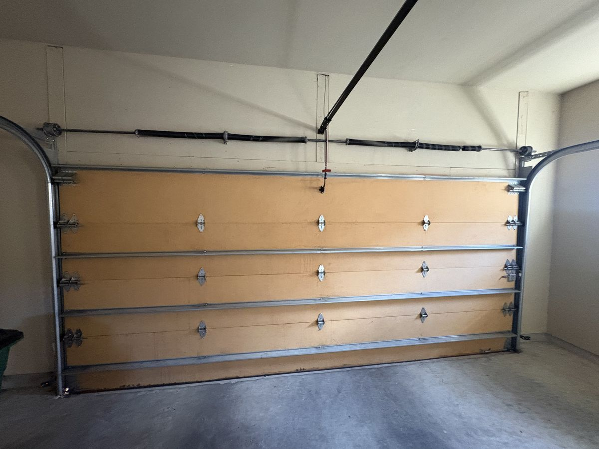
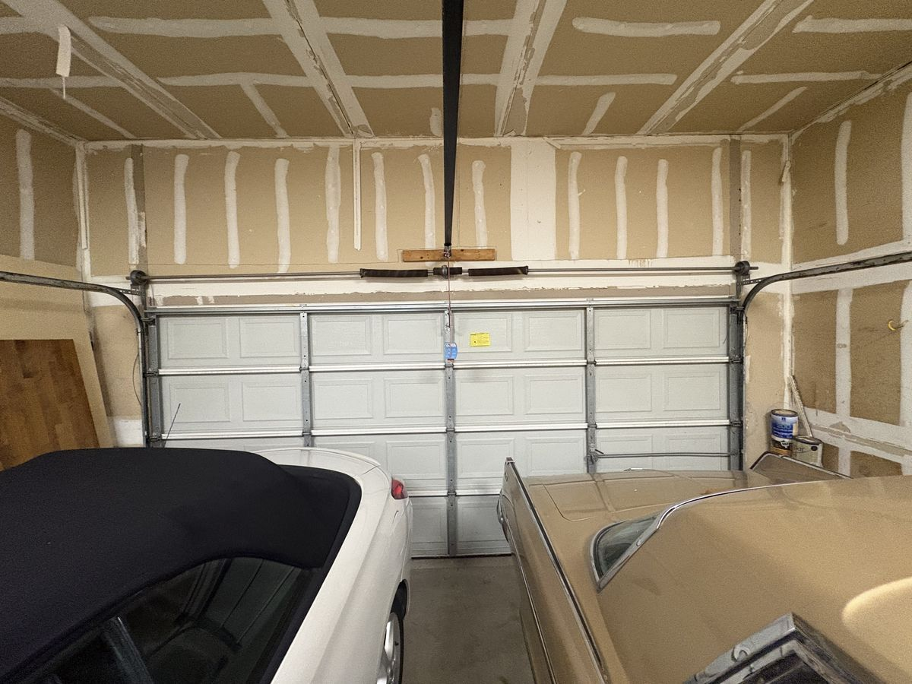
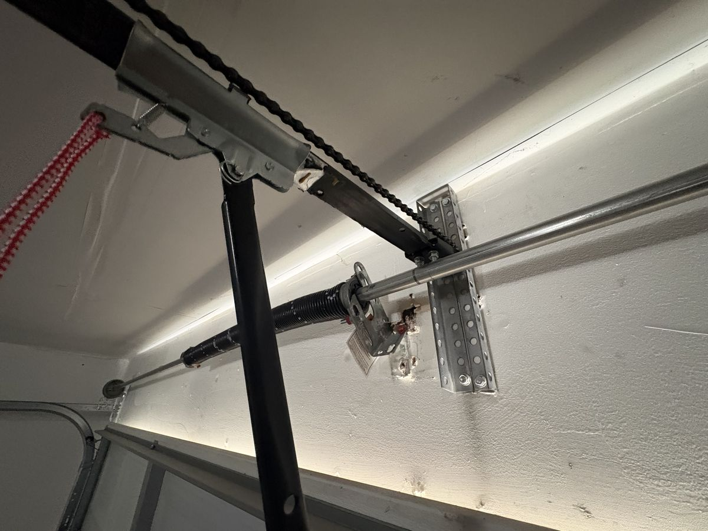
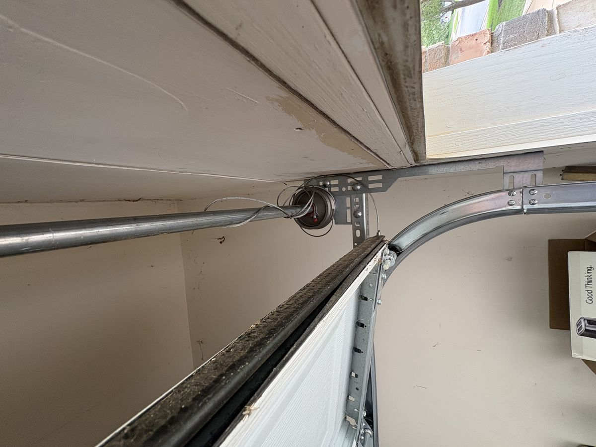
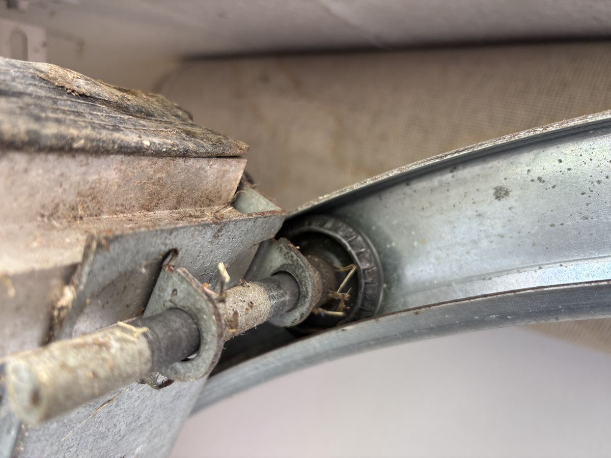
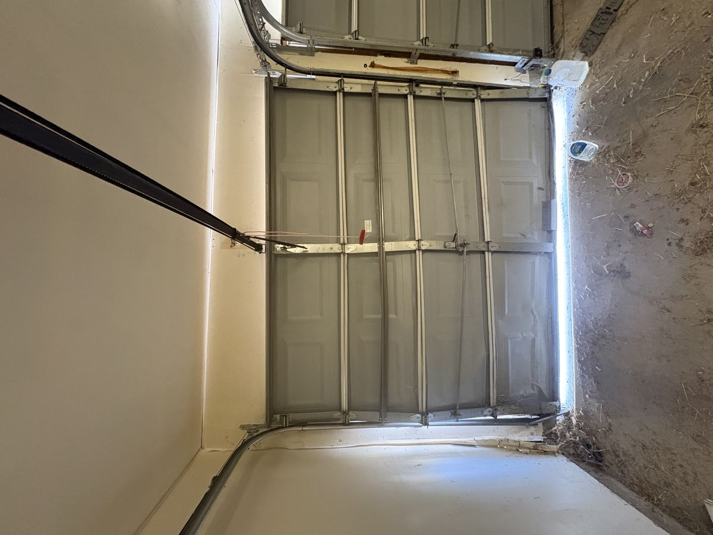

Start Here: What Is Your Door Actually Doing?
Find the description that matches what you're seeing. The symptom narrows down the cause before you even look at the hardware.
Check whether the opener has power. Try the wall button instead of the remote. If the wall button works but the remote doesn't, it's probably the remote's battery or programming. If neither works, the opener, its power or the wiring may need attention.
This is almost always a mechanical problem, not an electrical one. A broken spring is the most common cause. Look at the torsion spring above the door. If you see a gap, don't use the door.
The door might be binding in the tracks, the opener might be struggling with the door's weight, or the springs aren't balancing the load properly. Don't keep running the opener.
Check the safety sensors first. They sit near the bottom of the tracks on each side. If something is blocking one, or one has been bumped, the door won't close. Wipe the lenses and make sure both indicator lights are solid.
A cable has probably come off the drum or snapped. Stop using the door. An uneven door puts a lot of stress on the tracks, rollers and opener.
The springs balance the door's weight. When one fails, the door can feel like dead weight. If you also heard a loud bang, a broken spring is almost certainly the cause.
The Most Common Causes We See on Austin Service Calls
1. Broken Torsion Spring
A broken spring is the number one reason a garage door stops working. Torsion springs sit on a metal bar right above the door, and every open and close winds and unwinds them to balance the door's weight. Standard springs are rated for around 10,000 cycles, which is roughly 7 years of average use. After that, they can fail without much warning.
When a spring snaps, it makes a loud bang. People often describe it as a gunshot inside the garage. After that, the opener may run but it can't lift the door.
What to look for
Look for a gap in the spring coil, usually 2 inches or more. If the spring looks whole and continuous, the problem is probably something else.

On two-car doors with heavy panels, we sometimes see both springs fail at the same time. It happens most on older systems where both springs have the same amount of wear.

We always recommend replacing both springs together, since they wear at the same rate. Two separate service calls cost more than replacing both in one visit.
2. Center Bracket or Hardware Detached From the Wall
This one is less common, but it is more dangerous than a broken spring. The center bearing plate is the bracket that anchors the middle of the torsion bar to the wall above the door. It holds the whole spring assembly in place. When it pulls loose from old anchors, water-damaged drywall or years of vibration, the spring tension becomes uneven and unpredictable. The torsion bar can drop or whip around without warning.

3. Loose or Off-Track Cable
Lift cables run from the bottom corners of the door up to drums at each end of the torsion bar. They work with the springs to raise and lower the door evenly. When a cable snaps or slips off the drum, one side of the door loses its support and the door hangs at an angle.

4. Door Off Track
An off-track door is one of the more dramatic failures we get called for, and one of the more dangerous to ignore. A door comes off its tracks when a cable breaks suddenly, when a vehicle clips it while it's moving, when a roller fails, or when a track bracket works itself loose over time.

5. Worn or Seized Rollers
Rollers are the small wheels that run inside the tracks and let the panels travel smoothly. It's easy to forget about them until they cause trouble. Most standard garage doors come with plastic rollers from the factory. Over time they wear down, crack and eventually seize, especially in Austin, where UV and temperature swings speed up the breakdown. A seized roller stops rolling and drags instead. That grinding puts extra strain on the tracks, hinges and opener motor.

The Upgrade
Nylon rollers are the standard upgrade over plastic. They run quieter, last much longer and hold up better in Texas heat. If your door still has its original plastic rollers, switching to nylon is one of the best low-cost upgrades you can make.
Full roller replacement: starting at $996. Damaged Door Panels
Not every garage door problem is mechanical. Sometimes the door itself is the issue. Panels get damaged by vehicle bumps, hail, falling objects or just years of weather. A damaged panel can keep the door from moving properly through the tracks, make it sit unevenly, or make the opener strain.

A single damaged panel can sometimes be replaced if the same model is still available and the rest of the door is in good shape. When several panels are damaged, or the door is older, replacing the whole door often makes more financial sense. We'll always give you an honest comparison before recommending either one.
7. Garage Door Opener Failure
Sometimes the door is fine and the opener is what failed. Common problems include a burned-out circuit board, a stripped drive gear inside the motor housing, a failed capacitor, or a motor that burned out from running the door with a broken spring for too long.
Before you assume the opener is dead, check the basics. Is the outlet working? Has the breaker tripped? Did someone pull the red disconnect cord? Those take 30 seconds to check and sometimes save you a service call.
Opener repair: $100 to $250 | New installation: starting at $459 installed8. Safety Sensor Problem
If the door opens fine but won't close, the safety sensors are usually the first thing to check. Every door has two photo-eye sensors near the bottom of the tracks, one on each side. They send an invisible beam across the opening. If anything breaks that beam, like a leaf, a cobweb, a toy or a sensor that got bumped, the door won't close and the opener lights will flash.
Clear away anything in the way, wipe the lenses, and make sure both indicator lights are solid. If one is blinking, gently adjust that sensor until both are solid. If that doesn't fix it, the wiring or the sensor itself may need replacing.
9. Door Out of Balance
An unbalanced door is one of the most overlooked causes of opener trouble and early wear. Here is how to test it yourself. Pull the red disconnect cord to release the opener, lift the door by hand to about waist height, and let go. A balanced door should stay where it is. If it slowly falls or shoots up, the spring tension needs a professional adjustment.
An unbalanced door makes the opener work harder on every cycle. Over time that extra load shortens the life of the motor and wears on the cables, rollers and tracks.
What Not to Do When Your Garage Door Stops Working
When to Call Immediately vs. When You Can Wait
| Situation | Priority |
|---|---|
| Broken spring (visible gap in the coil) | Call Now |
| Both springs broken | Call Now |
| Center bracket pulled away from wall | Call Now |
| Cable snapped or hanging loose | Call Now |
| Door is off track | Call Now |
| Door dropped suddenly | Call Now |
| Door noisy but still working | Address Soon |
| Door feels a little heavier than usual | Address Soon |
| Opener straining but still working | Address Soon |
| Remote not working (try a new battery first) | Not Urgent |
| Door reverses when closing (check the sensors) | Not Urgent |
| Opener running but the disconnect cord may be pulled | Not Urgent |
Repair or Replace?
A garage door that stops working doesn't automatically need to be replaced.
Repair usually makes sense when the panels are in good shape, the problem is one failed part like a spring, cable, roller or opener, and the door is less than 15 years old.
Replacement may make more sense when several parts are failing, the panels are badly damaged, the door is more than 15 to 20 years old, or repair costs are getting close to the price of a new door.
We'll always give you an honest comparison before any work begins. Our estimates are free and our pricing is upfront, with no surprises.